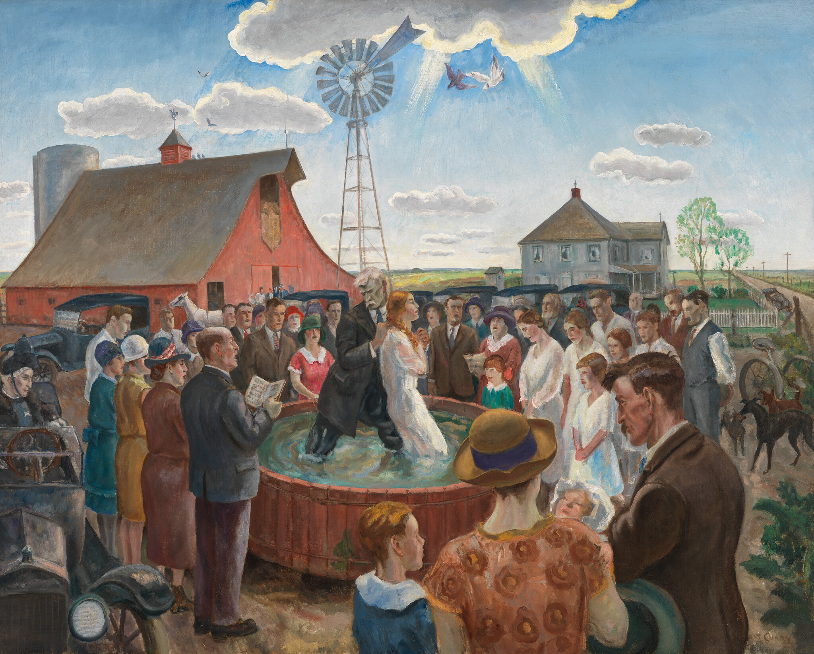

Poems
The Limbo of the Unbaptized

When our friends fall off our radar, disappear, they go perhaps to some limbo like unbaptized children. We are glad to believe that they are living full and happy lives somewhere out of our sight, out of our ken. Until we get new news, someone heard, unconfirmed that they had died. It was so easy to believe that they were eternal, that out of our sight was a safe place, a holding tank of possibilities interfiled with our memories, that limbo for the unbaptized. This is not to imply that we are gods, controlling the lives of others, but we are the key observers within our own lives of how others pass on and off the stage we share, a stage we may manage. The thought, so hard to accept is, if their relative absence in our lives does not give them a certain eternal being, in the limbo of the unbaptized, then we too may lack that comforting eternity.
Raised in a milltown on Lake Michigan in Michigan’s Upper Peninsula, John Peter Beck is a recently retired professor in the labor education program at Michigan State University where he still co-directs a program that focuses on labor history and the culture of the workplace, Our Daily Work/Our Daily Lives.